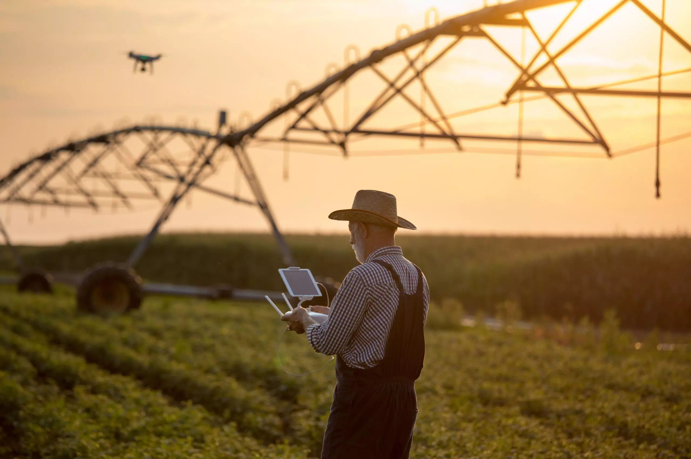

A tecnologia é um sistema atráves do qual a sociedade satisfaz as necessidades e desejos de seus membros
A tecnologia chegou no campo para ficar e garantir melhor qualidade e produtividade. Nas fazendas leiteiras, um exemplho é usado cada vez maior de equipamentos e sistemas tecnológicos como sensores de estoques em silos, drones tratadores automáticos, etiquetas de identificação dos animais, GPS, aplicativos, entre outros. 